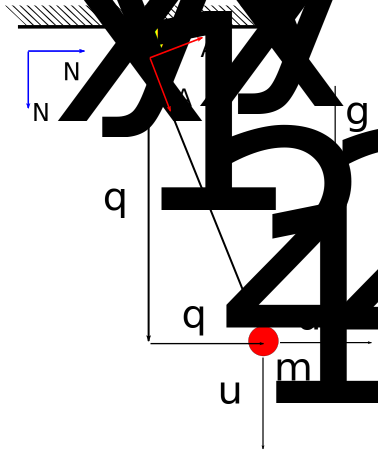

Posted on June 13, 2014
As of last week the Linearizer class implementing the general form discussed
in Luke and Gilbert's paper was completed. The methods contained for
linearization work for any system that can be expressed by any combination of
the following:
\begin{aligned} f_{c}(q, t) &= 0_{l \times 1} \\ f_{v}(q, u, t) &= 0_{m \times 1} \\ f_{a}(q, \dot{q}, u, \dot{u}, t) &= 0_{m \times 1} \\ f_{0}(q, \dot{q}, t) + f_{1}(q, u, t) &= 0_{n \times 1} \\ f_{2}(q, \dot{u}, t) + f_{3}(q, \dot{q}, u, r, t) &= 0_{(o-m) \times 1} \end{aligned}
with
\begin{aligned} q, \dot{q} & \in \mathbb{R}^n \\ u, \dot{u} & \in \mathbb{R}^o \\ r & \in \mathbb{R}^s \end{aligned}
This works for most systems (it was derived with kanes method in mind specifically). However, systems expressed using lagranges method can't be brought into this form.
This week I spent some time rederiving the general form to make it fit lagranges method, as well as kanes method. I plan to write up a formal paper expressing the derivation as a reference and documentation of the class; here I'll just give a brief overview.
In general, Lagrange's Method expresses the system using 3 equations:
\begin{aligned} m_{c}(q, t) \dot{q} + f_{c}(q, t) &= 0_{m \times 1}\\ m_{dc}(\dot{q}, q, t) \ddot{q} + f_{dc}(\dot{q}, q, t) &= 0_{m \times 1}\\ m_{d}(\dot{q}, q, t) \ddot{q} + \Lambda_c(q, t) \lambda + f_{d}(\dot{q}, q, r, t) &= 0_{n \times 1}\\ \end{aligned}
with
\begin{aligned} q, \dot{q}, \ddot{q} & \in \mathbb{R}^n \\ r & \in \mathbb{R}^s \\ \lambda & \in \mathbb{R}^m \end{aligned}
In this case, the first equation encompass the time differentiated holonomic constraints, as well as the nonholonomic constraints. The second equation is then the time derivative of the first equation. The third equation represents the dynamics of the system, as formed by the lagrangian. The lagrange multipliers ($\lambda$) enforce these constraints.
With some rearranging of the above, they can be merged with the previous general form for Kane's Method, forming a set of equations that should be able to contain most equations of motion:
\begin{aligned} f_{c}(q, t) &= 0_{l \times 1} \\ f_{v}(q, u, t) &= 0_{m \times 1} \\ f_{a}(q, \dot{q}, u, \dot{u}, t) &= 0_{m \times 1} \\ f_{0}(q, \dot{q}, t) + f_{1}(q, u, t) &= 0_{n \times 1} \\ f_{2}(q, u, \dot{u}, t) + f_{3}(q, \dot{q}, u, r, t) + f_{4}(q, \lambda, t) &= 0_{(o-m+k) \times 1} \end{aligned}
with
\begin{aligned} q, \dot{q} & \in \mathbb{R}^n \\ u, \dot{u} & \in \mathbb{R}^o \\ r & \in \mathbb{R}^s \\ \lambda & \in \mathbb{R}^k \end{aligned}
Note that the only changes are the addition of a $u$ term in $f_2$, and the $f_{4}$ term holding the lagrange multipliers. For Lagrange's method, $\dot{q} = u$, and $k = m$; for Kanes method $k = 0$, and everything looks the same as it did before.
The returned $M$, $A$, and $B$ linearized form then is:
$$ M \begin{bmatrix} \delta \dot{q} \\ \delta \dot{u} \\ \delta \lambda \end{bmatrix} = A \begin{bmatrix} \delta q_i \\ \delta u_i \end{bmatrix} + B \begin{bmatrix} \delta r \end{bmatrix} $$
where
\begin{aligned} M &\in \mathbb{R}^{(n+o+k) \times (n+o+k)} \\ A &\in \mathbb{R}^{(n+o+k) \times (n-l+o-m)} \\ B &\in \mathbb{R}^{(n+o+k) \times s} \end{aligned}
As before, the $M$ matrix can be inverted, and the square state space matrices $A$ and $B$ calculated.
The functionality described above has been implemented in the LinearizeLagrange branch of sympy on my github. As this is a superset of the functionality I implemented last week, I'm going to hold off on submitting this to master until my current pull request is merged. For now I made a local PR here. Please take a look through, I need all the code review I can get.
Two tests have been implemented linearizing a system generated with Lagrange's Method. I plan on adding more next week, as well as improving the documentation.
A demonstration of the current functionality for a non-minimal realization of a pendulum is below. The pendulum has two generalized coordinates, $q1$ and $q2$. As this is Lagrange's method, the generalized speeds are just the time derivatives of the coordinates (i.e. $u = \dot{q}$).

# Create the required symbols
q1, q2 = dynamicsymbols('q1:3')
q1d, q2d = dynamicsymbols('q1:3', level=1)
L, m, t = symbols('L, m, t')
g = 9.8
# Compose World Frame
N = ReferenceFrame('N')
pN = Point('N*')
pN.set_vel(N, 0)
# A.x is along the pendulum
theta1 = atan(q2/q1)
A = N.orientnew('A', 'axis', [theta1, N.z])
# Create point P, the pendulum mass
P = pN.locatenew('P1', q1*N.x + q2*N.y)
P.set_vel(N, P.pos_from(pN).dt(N))
pP = Particle('pP', P, m)
# Constraint Equations
f_c = Matrix([q1**2 + q2**2 - L**2])
# Calculate the lagrangian, and form the equations of motion
Lag = Lagrangian(N, pP)
LM = LagrangesMethod(Lag, [q1, q2], hol_coneqs=f_c, forcelist=[(P, m*g*N.x)], frame=N)
LM.form_lagranges_equations()
At this point the equations of motion have been formed, but not linearized. Linearization requires that dependent and independent coordinates be chosen. In this case we'll chose $q2$ as independent, and $q1$ as dependent.
# Choose the independent and dependent coordinates
q_i = Matrix([q2])
q_d = Matrix([q1])
u_i = Matrix([q2d])
u_d = Matrix([q1d])
linearizer = LM.to_linearizer(q_i, u_i, q_d, u_d)
# Compose operating point
q_op = {q1: L, q2: 0}
u_op = {q1d: 0, q2d: 0}
ud_op = {q1d.diff(t): 0, q2d.diff(t): 0}
# Perform the linearization
A, B = linearizer.linearize(q_op=q_op, u_op=u_op, ud_op=ud_op, A_and_B=True)
print(A)
print(B)
Output:
Matrix([
[ 0, 1],
[-2*lam1(t)/m, 0]])
Matrix(0, 0, [])
Note that the lagrange multiplier apppears in the linearization. However, for a given operating point, each multiplier has a specific value (i.e. they're not free choices). Using the structure of the system of equations, the values can be solved for, and substituted in:
# Take advantage of problem structure to solve for lams
mass_matrix = LM.mass_matrix.col_join((-LM.lam_coeffs.row_join(zeros(1, 1))))
force_matrix = LM.forcing.col_join(LM._f_cd)
lam_op_vec = Matrix((mass_matrix.inv()*(-force_matrix))[-1:])
lam_op_vec = lam_op_vec.subs(ud_op).subs(u_op).subs(q_op)
lam_op = dict(zip(LM.lam_vec, lam_op_vec))
# Substitute the value for the multipliers at this operating point
A = A.subs(lam_op)
print(A)
Output:
Matrix([
[ 0, 1],
[-9.8/L, 0]])
This is the correct linearization for a pendulum linearized about hanging
at rest operating point. You can try out the added functionality demonstrated
above by cloning my LinearizeLagrange branch of sympy
here.
While functional, it still isn't finished. I still need to add documentation, more tests, and finalize the interface. I plan on working on this next week.